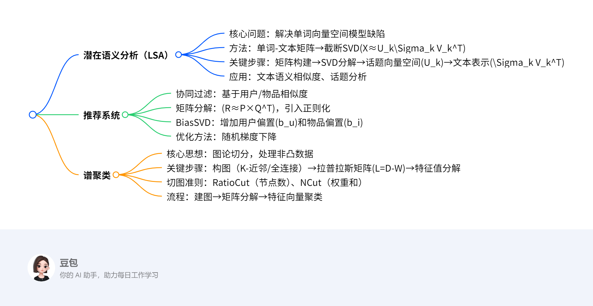

线代应用¶
总览¶
一段话总结¶
文档主要介绍线性代数在潜在语义分析（LSA）、推荐系统和谱聚类中的应用。潜在语义分析通过单词-文本矩阵的截断奇异值分解（SVD）挖掘文本与单词的话题关系，解决一词多义与多词一义问题；推荐系统利用矩阵分解（如Funk-SVD、BiasSVD）预测用户评分，结合用户/物品偏置提升精度；谱聚类基于图论构建邻接矩阵和拉普拉斯矩阵，通过特征值分解实现非凸数据聚类，对比K-means更灵活。
思维导图¶
¶
详细总结¶
一、潜在语义分析（LSA）¶
目标：通过矩阵分解发现文本与单词的潜在话题关系，提升语义相似度准确性。
1. 单词向量空间模型
- 表示方法：单词-文本矩阵 \(X_{m×n}\)，元素为TF-IDF值，反映单词在文本中的重要性：
[
\text{TF-IDF}{ij} = \frac{\text{tf}
]}}{\text{tf}_{\cdot j}} \log\frac{\text{df}}{\text{df}_i
- \(\text{tf}_{ij}\)：单词\(i\)在文本\(j\)中的频数；\(\text{df}_i\)：含单词\(i\)的文本数。
- 缺陷：无法处理一词多义（如“apple”）和多词一义（如“airplane”与“aircraft”）。
- 话题向量空间模型
-
核心思想：将文本表示为话题向量的线性组合，通过截断奇异值分解（SVD）实现：
[ X \approx U_k \Sigma_k V_k^T ]- \(U_k\)：话题向量空间（左奇异向量），每列表示一个话题。
- \(\Sigma_k V_k^T\)：文本在话题空间的表示，每列对应一个文本的话题权重。
-
示例
- 输入：11×9单词-文本矩阵（含9个文本、11个单词的频数）。
-
截断SVD（\(k=3\)）：
- 左矩阵\(U_3\)：3个话题向量（如“investing”在话题1的权重为0.74）。
- 对角矩阵\(\Sigma_3\)：奇异值为3.91、2.61、2.00（重要性递减）。
- 右矩阵\(V_3^T\)：9个文本的话题权重（如文本T1在话题1的权重为0.35）。
-
非负矩阵分解（补充）
- 形式：\(X≈WH\)，\(W\)为话题向量，\(H\)为文本话题表示，均为非负矩阵。
- 优化：平方损失函数+梯度下降求解。
二、推荐系统¶
目标：通过用户-物品交互矩阵预测评分，实现个性化推荐。
1. 协同过滤
- 基于用户（UserCF）：寻找相似用户，推荐其喜欢的物品。
- 基于物品（ItemCF）：寻找相似物品，推荐给目标用户。
- 相似度计算：余弦相似度、皮尔逊相关系数。
- 矩阵分解方法
- Funk-SVD：
- 分解评分矩阵\(R≈P×Q^T\)，\(P\)（用户特征）和\(Q\)（物品特征）。
- 目标函数：\(\min \sum(r_{ui}-p_u^T q_i)^2 + \lambda(\|p_u\|^2+\|q_i\|^2)\)（正则化防止过拟合）。
-
Bias-SVD：
- 引入全局平均分\(u\)、用户偏置\(b_u\)、物品偏置\(b_i\)：
[ \hat{r}_{ui} = u + b_u + b_i + p_u^T q_i ] - 目标函数：\(\min \sum(r_{ui}-u-b_u-b_i-p_u^T q_i)^2 + \lambda(\|p_u\|^2+\|q_i\|^2+\|b_u\|^2+\|b_i\|^2)\)。
- 引入全局平均分\(u\)、用户偏置\(b_u\)、物品偏置\(b_i\)：
-
示例
- 输入：6用户×12电影的评分矩阵（部分已知评分，如用户1对电影21评1分）。
- 预测：用户1对电影62的评分通过相似用户（如用户3、6）的加权平均计算，结合偏置项优化。
三、谱聚类¶
目标：基于图论将数据点转换为图节点，通过切图实现聚类，适用于非凸分布。
1. 构图方法
- K-近邻法：仅当两点互为K近邻时连边，权重\(w_{ij}=e^{-\frac{\|x_i-x_j\|^2}{2\sigma^2}}\)。
- 全连接法：所有点连边，常用高斯核（RBF）：\(w_{ij}=e^{-\frac{\|x_i-x_j\|^2}{2\sigma^2}}\)。
- 关键矩阵
- 度矩阵 \(D\)：对角元素为节点度数\(d_i=\sum_j w_{ij}\)。
-
拉普拉斯矩阵 \(L=D-W\)，性质：对称半正定，\(f^T L f = \frac{1}{2}\sum_{i,j} w_{ij}(f_i-f_j)^2\)。
-
切图准则
- RatioCut：最小化割边权重和，同时最大化子图节点数：
[ \text{RatioCut} = \sum_i \frac{W(A_i, \bar{A_i})}{|A_i|} ] -
NCut：基于子图权重和\(vol(A_i)\)，更鲁棒：
[ \text{NCut} = \sum_i \frac{W(A_i, \bar{A_i})}{vol(A_i)} ] -
算法流程（以NCut为例）
- 构建相似度矩阵\(S\)→邻接矩阵\(W\)和度矩阵\(D\)。
- 计算标准化拉普拉斯矩阵\(D^{-1/2} L D^{-1/2}\)。
- 取前\(k_1\)个最小特征值对应的特征向量，标准化后得到矩阵\(F\)。
- 对\(F\)的行向量进行K-means聚类，得到最终簇划分。
关键问题¶
-
问题：潜在语义分析如何提升文本相似度计算的准确性？
答案：通过截断SVD将文本从单词向量空间转换到话题向量空间，将文本相似度从单词频率比较转为话题权重比较，解决一词多义（如“apple”区分为“水果”和“品牌”话题）和多词一义（如“airplane”与“aircraft”归属同一话题）问题。 -
问题：Bias-SVD相比Funk-SVD的改进点是什么？
答案：Bias-SVD引入用户偏置（如用户评分习惯偏高/低）和物品偏置（如热门物品评分普遍高），公式为\(\hat{r}_{ui}=u+b_u+b_i+p_u^T q_i\)，而Funk-SVD仅依赖潜在特征。偏置项能修正用户和物品的固有偏差，提升预测精度。 -
问题：谱聚类为何能处理K-means无法解决的非凸数据？
答案： - K-means基于欧氏距离和簇中心，仅适用于凸形聚类。
- 谱聚类将数据转换为图结构，通过拉普拉斯矩阵特征值分解捕捉数据的全局结构，允许簇间通过“切图”分离，适用于任意形状（如环形、半月形）数据。例如，对“半月形”数据，谱聚类通过邻接矩阵仅连接局部近邻点，避免K-means的错误聚合。
潜在语义分析（LSA）¶
一、核心概念与目标¶
定义：
潜在语义分析（LSA）是一种无监督学习方法，通过矩阵分解挖掘文本与单词之间的潜在话题关系，解决传统单词向量空间模型的语义表示缺陷（如一词多义、多词一义）。
核心目标：
- 将文本从单词向量空间转换到话题向量空间，以话题向量表示文本语义，提升文本相似度计算的准确性。
- 通过截断奇异值分解（SVD）或非负矩阵分解（NMF）实现矩阵降维，发现文本集合中的隐含话题结构。
二、单词向量空间模型的局限性¶
表示方法：
- 单词-文本矩阵（X）：元素为单词在文本中的TF-IDF值，反映单词重要性：
[
\text{TF-IDF}{ij} = \frac{\text{tf}
]}}{\text{tf}_{\cdot j}} \log\frac{\text{df}}{\text{df}_i
- \(\text{tf}_{ij}\)：单词\(i\)在文本\(j\)中的频数；\(\text{df}_i\)：含单词\(i\)的文本数。
- 相似度计算：向量内积或余弦相似度，假设“共同单词越多，语义越相似”。
缺陷：
1. 一词多义：如“apple”可能表示“水果”或“品牌”，单词向量空间无法区分。
2. 多词一义：如“airplane”与“aircraft”视为不同单词，导致相似文本相似度计算偏低。
三、话题向量空间模型与潜在语义分析¶
核心思想：
- 每个文本由多个话题的线性组合表示，每个话题由一组语义相关的单词构成。
- 通过矩阵分解将单词-文本矩阵 \(X \approx T \times Y\)，其中：
- \(T\)（单词-话题矩阵）：列向量为话题向量，表示单词与话题的关联强度。
- \(Y\)（话题-文本矩阵）：列向量为文本的话题权重，表示文本中各话题的重要性。
关键步骤：
1. 矩阵分解：对单词-文本矩阵 \(X\) 进行截断SVD或非负矩阵分解（NMF）。
2. 话题向量空间构建：分解得到的左矩阵（如SVD中的\(U_k\)或NMF中的\(W\)）即为话题向量空间。
3. 文本话题表示：右矩阵（如SVD中的\(\Sigma_k V_k^T\)或NMF中的\(H\)）表示文本在话题空间中的投影。
四、求解方法：截断奇异值分解（SVD）¶
算法流程：
1. 构造单词-文本矩阵 \(X_{m \times n}\)（\(m\)为单词数，\(n\)为文本数）。
2. 截断SVD分解：
[
X \approx U_k \Sigma_k V_k^T
]
- \(U_k\)：\(m \times k\) 矩阵，列向量为话题向量（左奇异向量），表示每个话题中单词的权重。
- \(\Sigma_k\)：\(k \times k\) 对角矩阵，奇异值按降序排列，反映话题的重要性。
- \(V_k^T\)：\(k \times n\) 矩阵，行向量为文本的话题权重（右奇异向量）。
3. 话题与文本表示：
- 每个话题由\(U_k\)的列向量表示，文本由\(V_k^T\)的行向量表示。
示例：
输入：11×9单词-文本矩阵（9个文本，11个单词的频数，如“investing”在多个文本中高频出现）。
截断SVD（\(k=3\)）：
1. 分解结果：
- 左矩阵\(U_3\)（话题向量空间）：
| 单词 | 话题1 | 话题2 | 话题3 |
|------------|-------|-------|-------|
| investing | 0.74 | 0.21 | 0.21 |
| book | 0.15 | -0.27 | 0.04 |
| stock | 0.25 | -0.42 | -0.28 |
- 对角矩阵\(\Sigma_3\)：奇异值为3.91（话题1）、2.61（话题2）、2.00（话题3）。
- 右矩阵\(V_3^T\)（文本话题权重）：
| 文本 | 话题1 | 话题2 | 话题3 |
|--------|-------|-------|-------|
| T1 | 0.35 | -0.32 | -0.41 |
| T6 | 0.49 | 0.55 | -0.51 |
2. 语义解释：
- 话题1（奇异值最大）可能代表“投资”相关话题，包含“investing”“market”等单词。
- 文本T6在话题1和话题2的权重较高，可能同时涉及“投资”和“家庭”话题。
五、求解方法：非负矩阵分解（NMF）¶
算法流程：
1. 构造非负单词-文本矩阵 \(X_{m \times n} \geq 0\)。
2. 分解目标：寻找非负矩阵\(W_{m \times k}\)（话题向量）和\(H_{k \times n}\)（文本话题权重），使得：
[
X \approx W \times H
]
3. 优化目标（平方损失函数）：
[
\min_{W,H} \frac{1}{2} | X - W H |^2 \quad \text{s.t.} \quad W \geq 0, H \geq 0
]
4. 梯度下降更新规则：
[
W_{il} \leftarrow W_{il} \cdot \frac{(X H^T){il}}{(W H H^T) \cdot \frac{(W^T X)}}, \quad H_{lj} \leftarrow H_{lj{lj}}{(W^T W H)
] }
示例：
假设单词-文本矩阵\(X\)同SVD示例，分解后得到：
- 话题向量矩阵\(W\)：非负元素，如“investing”在话题1的权重为0.8，“book”为0.1。
- 文本话题矩阵\(H\)：非负元素，如文本T1在话题1的权重为0.9，话题2为0.1。
六、对比与应用场景¶
| 方法 | 优势 | 局限性 | 应用场景 |
|---|---|---|---|
| 截断SVD | 数学理论完善，支持负权重 | 要求矩阵稠密，需处理稀疏性 | 文本检索、语义分析 |
| NMF | 非负性符合实际语义，可解释性强 | 收敛速度较慢，需调参 | 图像分析、推荐系统 |
典型应用：
- 文本聚类：将相似话题的文本归为一类。
- 信息检索：通过话题向量提升查询与文档的语义匹配精度。
- 词义消歧：区分多义词在不同话题中的含义（如“apple”在“科技”与“食品”话题中的不同权重）。
七、重点总结¶
- 核心价值：通过矩阵分解将“单词-文本”关联转换为“话题-文本”关联，解决传统模型的语义缺陷。
- 关键工具：SVD和NMF均通过降维实现话题挖掘，前者基于正交变换，后者基于非负约束。
- 实施要点：需预处理稀疏矩阵（如TF-IDF加权），合理选择话题数\(k\)（通常通过奇异值累积贡献率或肘部法则确定）。
线性代数与推荐系统¶
一、核心概念与目标¶
定义：
推荐系统通过分析用户与物品的交互数据（如评分、点击），预测用户对物品的偏好，实现个性化推荐。线性代数方法（如矩阵分解、协同过滤）是其核心技术，旨在解决数据稀疏性和高维问题。
核心目标：
- 利用用户-物品交互矩阵（评分矩阵）挖掘潜在特征，预测未知评分，提升推荐精度。
- 解决协同过滤算法在高维稀疏场景下的计算瓶颈和精度问题。
二、协同过滤算法¶
基本思想：
- 基于用户的协同过滤（UserCF）：根据用户间的兴趣相似度推荐物品（“人以群分”）。
- 基于物品的协同过滤（ItemCF）：根据物品间的特征相似度推荐物品（“物以类聚”）。
关键步骤：
1. 构建评分矩阵：\(R_{m \times n}\)（\(m\)为用户数，\(n\)为物品数），元素\(r_{ui}\)为用户\(u\)对物品\(i\)的评分。
2. 相似度计算：
- 余弦相似度：
[
\text{sim}(x, y) = \frac{x \cdot y}{|x| |y|}
]
- 皮尔逊相关系数：
[
\text{sim}(x, y) = \frac{\sum(x_k - \bar{x})(y_k - \bar{y})}{\sqrt{\sum(x_k - \bar{x})^2 \sum(y_k - \bar{y})^2}}
]
3. 评分预测：通过相似用户/物品的评分加权平均预测未知评分。
示例：用户A的图书推荐
- 用户兴趣：用户A喜欢“侦探小说、科普图书、计算机技术书”，用户B喜欢“数学、机器学习”。
- UserCF步骤：
1. 找到与用户A兴趣相似的用户（如用户C，同喜欢计算机技术）。
2. 推荐用户C喜欢但用户A未读的书（如《数据结构》）。
- ItemCF步骤：
1. 找到与“计算机技术书”相似的物品（如《机器学习》）。
2. 推荐给用户A。
局限性：
- 计算瓶颈：用户/物品数量激增时，相似度矩阵计算复杂度高（\(O(m^2)\)或\(O(n^2)\)）。
- 稀疏性问题：评分矩阵稀疏时，相似度计算不准确。
三、矩阵分解方法¶
核心思想：
将评分矩阵分解为用户潜在特征矩阵\(P\)和物品潜在特征矩阵\(Q\)，通过低维 latent 空间捕捉用户兴趣和物品属性：
[
R \approx P \times Q^T, \quad \hat{r}{ui} = p_u^T q_i = \sum
]}^K p_{uk} q_{ki
其中，\(K\)为潜在特征数（如“科幻”“悬疑”等话题）。
1. Funk-SVD¶
优化目标：
[
\min_{P, Q} \sum_{(u,i) \in R} (r_{ui} - p_u^T q_i)^2 + \lambda (|p_u|^2 + |q_i|^2)
]
- 第一项为损失函数，衡量预测评分与真实评分的误差；
- 第二项为正则化项，防止过拟合。
求解方法：随机梯度下降（SGD）
1. 初始化：随机初始化\(P\)和\(Q\)。
2. 梯度计算：
[
\frac{\partial L}{\partial p_u} = -2(r_{ui} - p_u^T q_i) q_i + 2\lambda p_u, \quad \frac{\partial L}{\partial q_i} = -2(r_{ui} - p_u^T q_i) p_u + 2\lambda q_i
]
3. 参数更新：
[
p_u \leftarrow p_u + \eta (2(r_{ui} - \hat{r}{ui}) q_i - 2\lambda p_u)
]
[
q_i \leftarrow q_i + \eta (2(r) p_u - 2\lambda q_i)} - \hat{r}_{ui
]
（\(\eta\)为学习率）
示例：电影评分预测
- 输入：6用户×12电影评分矩阵（部分已知，如用户1对电影21评1分，对电影62未评分）。
- 分解过程：
1. 设\(K=2\)（潜在特征为“动作片”“剧情片”）。
2. 迭代更新\(P\)和\(Q\)，使预测评分\(\hat{r}_{ui}\)接近真实值。
- 输出：用户1对电影62的预测评分为3.5分（基于潜在特征“动作片”的偏好）。
2. Bias-SVD（带偏置的矩阵分解）¶
改进点：引入全局偏置项，区分用户评分习惯和物品固有属性：
[
\hat{r}_{ui} = \mu + b_u + b_i + p_u^T q_i
]
- \(\mu\)：全局平均分；
- \(b_u\)：用户偏置（如用户A评分普遍偏高）；
- \(b_i\)：物品偏置（如热门电影评分普遍较高）。
优化目标：
[
\min_{P, Q, b_u, b_i} \sum_{(u,i) \in R} (r_{ui} - \mu - b_u - b_i - p_u^T q_i)^2 + \lambda (|p_u|^2 + |q_i|^2 + b_u^2 + b_i^2)
]
求解方法：SGD同时更新\(P, Q, b_u, b_i\)
[
b_u \leftarrow b_u + \eta (2(r_{ui} - \hat{r}{ui}) - 2\lambda b_u)
]
[
b_i \leftarrow b_i + \eta (2(r) - 2\lambda b_i)} - \hat{r}_{ui
]
示例：用户评分修正
- 用户1评分普遍偏低（\(b_u = -0.5\)），电影62为热门影片（\(b_i = 0.8\)），全局平均分\(\mu = 3.5\)。
- 预测评分：\(\hat{r}_{ui} = 3.5 - 0.5 + 0.8 + p_u^T q_i = 3.8 + p_u^T q_i\)，提升准确性。
四、隐含语义分析（LSA）的应用¶
思路：将用户-物品交互矩阵视为“单词-文本矩阵”，通过截断SVD挖掘潜在特征（类似话题分析）：
[
R \approx U_k \Sigma_k V_k^T
]
- \(U_k\)：用户潜在特征矩阵；
- \(V_k\)：物品潜在特征矩阵；
- \(\Sigma_k\)：奇异值矩阵（特征重要性）。
优势：
- 处理高维稀疏矩阵，降低计算复杂度；
- 捕捉用户和物品的隐含关联（如用户对“科幻”话题的偏好）。
示例：视频推荐
- 用户Dave的向量：在隐变量空间中接近《Ocean's 11》（动作片）和《The Lion King》（动画片）的向量。
- 推荐逻辑：根据向量距离排序，推荐《Ocean's 11》（距离更近）和同类影片。
五、方法对比与适用场景¶
| 方法 | 优势 | 局限性 | 适用场景 |
|---|---|---|---|
| 协同过滤 | 可解释性强，实现简单 | 高维稀疏场景效率低 | 小规模数据集，冷启动 |
| Funk-SVD | 降维处理，泛化能力强 | 需填充稀疏矩阵 | 中大规模推荐系统 |
| Bias-SVD | 引入偏置，精度更高 | 参数更多，计算量略增 | 评分存在显著偏置场景 |
| LSA+SVD | 捕捉隐含语义，抗稀疏性 | 依赖矩阵稠密性假设 | 文本/多媒体推荐 |
六、重点总结¶
- 核心问题：推荐系统的关键是处理高维稀疏数据，线性代数方法通过矩阵分解降维，提升推荐效率和精度。
- 求解核心：随机梯度下降优化损失函数，正则化防止过拟合，偏置项修正用户/物品固有偏差。
- 应用要点：根据数据特点选择方法（如协同过滤用于可解释场景，矩阵分解用于大规模数据），合理设置潜在特征数\(K\)（通常10-100）。
谱聚类¶
一、核心概念与背景¶
定义：
谱聚类是一种基于图论的聚类算法，将样本点视为图的节点，通过构建邻接矩阵衡量样本间相似度，再利用拉普拉斯矩阵的特征值分解实现聚类。
核心思想：
- 将聚类问题转化为图切分（Graph Cut）问题，通过最小化割边权重（即样本间差异）实现簇划分。
- 适用于非凸形状数据（如环形、月牙形），克服K-means对凸形数据的依赖。
二、关键步骤与方法¶
1. 构图（构建邻接矩阵 \(W\)）¶
目标：量化样本间的相似度，形成图结构。
方法：
- K-近邻法（KNN）：
- 对每个样本，连接最近的\(k\)个邻居，权重为高斯核函数值：
[
w_{ij} =
\begin{cases}
\exp\left(-\frac{|x_i - x_j|2}{2\sigma2}\right), & x_i \in KNN(x_j) \text{ 或 } x_j \in KNN(x_i) \
0, & \text{否则}
\end{cases}
]
- 确保对称性（双向近邻）。
- 全连接法（高斯核）：
- 所有样本点连边，权重为高斯核值：
[
w_{ij} = \exp\left(-\frac{|x_i - x_j|2}{2\sigma2}\right)
]
- 适用于数据分布密集的场景。
示例：
- 样本集：二维平面上的“月牙形”数据点（紫色和红色点局部接近，全局分离）。
- 邻接矩阵构建：
- 紫色点仅与邻近紫色点连边，红色点同理，跨颜色点距离远则权重为0。
2. 构建度矩阵 \(D\) 与拉普拉斯矩阵 \(L\)¶
- 度矩阵 \(D\)：对角矩阵，\(D_{ii} = \sum_j w_{ij}\)（节点\(i\)的边权和）。
- 拉普拉斯矩阵 \(L\)：
[ L = D - W ]
性质：对称半正定，\(f^T L f = \frac{1}{2}\sum_{i,j} w_{ij}(f_i - f_j)^2\)，衡量向量\(f\)在图上的光滑性。
3. 切图准则与优化目标¶
目标：找到最优切分，使簇内连接紧密，簇间连接稀疏。
- RatioCut（比率切图）：
[
\text{RatioCut} = \sum_{i=1}^k \frac{W(A_i, \bar{A_i})}{|A_i|}
]
- 其中，\(W(A_i, \bar{A_i})\)为簇\(A_i\)与其他簇的边权和，\(|A_i|\)为簇内节点数。
- 优化目标：最小化割边权重和，同时最大化簇内节点数，避免划分出孤立小簇。
- NCut（归一化切图）：
[
\text{NCut} = \sum_{i=1}^k \frac{W(A_i, \bar{A_i})}{\text{vol}(A_i)}
]
- \(\text{vol}(A_i) = \sum_{v \in A_i} d_v\)（簇内节点度之和），归一化处理使切分更均衡。
4. 特征值分解与聚类¶
理论基础：
- 拉普拉斯矩阵的特征向量对应图的低频信号，最小特征值对应的特征向量可用于簇划分。
- 瑞利商定理：对于对称矩阵\(L\)，最小特征值对应瑞利商\(R(L, f) = \frac{f^T L f}{f^T f}\)的最小值，此时\(f\)为最优切分向量。
求解步骤：
1. 标准化拉普拉斯矩阵：
[
L_{\text{norm}} = D^{-1/2} L D^{-1/2}
]
2. 求解前\(k\)个最小特征值对应的特征向量，构成矩阵\(F \in \mathbb{R}^{n \times k}\)。
3. 行标准化：将\(F\)的每行归一化为单位向量。
4. 传统聚类：对标准化后的行向量应用K-means等算法，得到离散簇划分。
三、示例解析：二维月牙形数据聚类¶
输入：二维平面上两类“月牙形”数据点（紫色和红色，共100个样本）。
步骤1：构图（全连接法，\(\sigma=0.5\)）
- 计算所有点对的高斯核权重，邻近点权重接近1，远离点权重接近0。
步骤2：构建拉普拉斯矩阵 \(L\)
- 度矩阵\(D\)对角线元素为各点权重和，\(L = D - W\)。
步骤3：特征值分解
- 计算\(L_{\text{norm}}\)的前2个最小特征值（\(\lambda_1 \approx 0\)，\(\lambda_2 \approx 0.2\)）对应的特征向量\(f_1, f_2\)。
- 标准化特征向量矩阵\(F = [f_1, f_2]\)，每行代表样本在二维特征空间的坐标。
步骤4：K-means聚类
- 对\(F\)的行向量应用K-means（\(k=2\)），得到紫色和红色簇的划分，准确率接近100%。
四、对比K-means的优势¶
| 特性 | K-means | 谱聚类 |
|---|---|---|
| 数据形状 | 适用于凸形、球形簇 | 适用于任意形状（如环形、月牙形） |
| 相似度 | 基于欧氏距离 | 基于图权重（可自定义核函数） |
| 计算复杂度 | \(O(nkI)\)（\(I\)为迭代次数） | \(O(n^3)\)（特征分解） |
| 参数敏感 | 对初始中心敏感 | 对核参数\(\sigma\)、\(k\)敏感 |
五、重点总结¶
- 核心流程：构图→构建矩阵→特征分解→聚类，通过图论将非线性聚类转化为线性代数问题。
- 关键优势：处理非凸数据、灵活性高（可自定义相似度核），但需注意参数调优（如\(\sigma\)、\(k\)）。
- 应用场景：图像分割、社交网络聚类、高维数据降维聚类等。